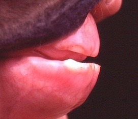
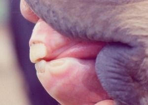
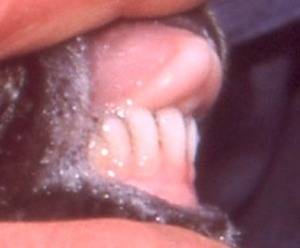
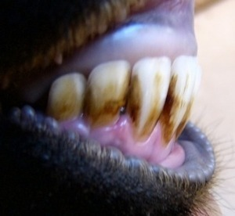
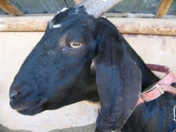
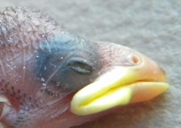
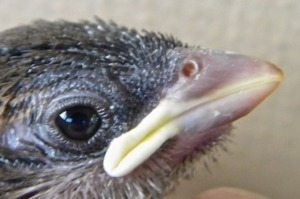

Our website is publishing this article by Judy Hoy because it is written by someone who has had 50 years of animal rehabilitation experience. You will soon discover that Judy Hoy has had very impressive results in treating animals with a specific homeopathic cell salt medicine called Calcarea phosphorica (aka Calc phos) 30X and with a mixture of all 12 homeopathic cell salt medicines called Bioplasma. Calc phos 12X is also readily available! Readers can obtain these homeopathic medicines from us by simply clicking on the links to these two great remedies.
This article discusses mitigating adverse health symptoms with Homeopathic Cell Salts or a combination of liquid saline electrolytes and Homeopathic Cell Salts combined.
Authored by Judy Hoy, 2858 Pheasant Lane, Stevensville, Montana
©2017 by Judy Hoy. All rights reserved.
While treating small animals in spring 1998, a series of fortunate discoveries made it possible for me to devise a formula that has worked well to help birds and animals recover from injuries, broken bones, chemical exposures, and even certain developmental/birth defects. I have written the following to address the positive effects of using Homeopathic Cell Salts alone or in combination with regular liquid saline electrolytes (Lactated Ringer’s Solution®, Pedialyte®, or other liquid saline electrolytes) in all vertebrate species, including humans.
The positive effects of cell salts and/or the saline electrolyte/cell salt combination were directly observed on treated young animals, which prompted me to try these on myself, with very good results. Others, who have used the cell salts or the cell salt/saline electrolyte combination on themselves or on animals in rehabilitation, livestock, pets or children have reported excellent results, so I am sharing these observations in hopes of helping animals of all kinds.
After treating both birds and mammals with the homeopathic product
Hyland’s Bioplasma®, I discovered its 12 cell salts significantly increased the
cell stimulating effect of the commonly used Lactated Ringer’s Solution®,
Pedialyte®, or other liquid electrolytes. The cell salts appear to increase the
negative charge inside an animal’s cells, so seem to be electrolytes in pill
form and thus help restore or maintain the body’s bioelectricity. This enables
the cells to uptake the positively charged minerals needed for normal cellular
processes. Since discovering this advantageous synergy, I always give a tablet
of Bioplasma, and usually a tablet of Hyland’s Calc. Phos. 30X® at the same
time I give or take a liquid saline electrolyte solution.
Several brands of liquid electrolytes are available in pharmacies, grocery
stores, or health food stores. Most liquid electrolytes contain water, sodium
chloride, sodium bicarbonate, potassium chloride, and sugar. My husband
found a recipe used by the United Nations for the dry ingredients added to
water to make electrolytes for dehydrated children. I modified the United
Nations recipe by leaving out the sugar and adding one tablet each of
Bioplasma and Calc. Phos. 30X to make an electrolyte combination that
works much better than normal electrolytes. Sugar is added to the
commercially made electrolyte solutions like Lactated Ringer’s Solution®
and Pedialyte® to stimulate cells to uptake the minerals and water more
quickly. Bioplasma does what sugar is supposed to do and, most importantly,
appears to stimulate cells to transport minerals and water across cell
membranes much more quickly and effectively than sugar, especially if the
sugar fails to do what it is supposed to do, which it often does.
To make the modified United Nations electrolyte formula, I thoroughly mix
the following dry ingredients in a bowl and store them in a closed container:
— one part regular salt (sodium chloride)
— two parts baking soda (sodium bicarbonate)
— one part potassium chloride
Straight potassium chloride can be purchased at health food stores. I use the
salt substitute Morton’s No Salt®, which is mainly potassium chloride and is
easy to find near table salt in grocery stores.
I dissolve one-eighth teaspoon of the dry mixture in eight ounces of water
whenever I need liquid electrolytes for animals in my care, or for me. I always
take, give or dissolve one tablet each of Bioplasma and Calc. Phos. 30X in the
liquid to take the place of sugar in what will be referred to as the “electrolyte
combination” in the rest of this document. Do not take or give the modified
sugarless United Nations recipe for electrolytes without taking or giving at
least the tablet of Bioplasma immediately prior to or at the same time.
Sugar is not particularly good for some birds, such as owls, hawks and other
raptors. If the bird or mammal needs carbohydrates, I give it a drop of a
commercial supplement called Nutrical® the second time I give them the
“electrolyte combination,” about 35 minutes after the first administration. This
ensures they are hydrated enough to be able to digest the carbohydrate
supplement. The Nutrical® can be mixed with the “electrolyte combination”
for treatment of emaciated wild or domestic mammals or birds, but not for
humans, of course. Most veterinary clinics and drug stores carry this or similar
products. Nutrical® is designed to stimulate the digestive system of the animal
to begin working and provides the vitamins and energy necessary for
digestion; it can also stimulate the appetite in animals who refuse to eat.
My hypothesis as to why cell salts significantly expedite cell hydration is that
liquid electrolytes are able to hydrate cells faster when the twelve cell salts are
present to enhance the intercellular electrical activity, promoting faster
transport of minerals and other nutrients into the cells. Stimulating cells to
utilize calcium is especially important for proper cellular function by the
brain, muscles and digestive organs. Thus, administering the cell salts, Calc.
Phos. 30X and Bioplasma, appears to observably benefit digestive processes
and other cellular functions dependent on calcium being readily available to
all the cells that need it. The two cell salt tablets may be mixed with any
electrolyte solution, put into a milk formula after warming it, mixed in food,
or placed directly in the mouth of the person or animal being treated.
The bird or mammal can be offered food appropriate for its age and species as
soon as it is hydrated enough to digest it. For birds, the “electrolyte
combination” may be added to the food or given instead of water at each
feeding until the bird has completely recovered and is eating normally. The
electrolyte solution may be given to mammal young between milk formula
feedings, but there must be at least an hour between the liquid electrolytes and
a milk feeding. Giving milk and liquid electrolytes at the same time to a young
mammal, including human newborns, thus diluting the milk, can cause it to
form a toxin in a newborn’s stomach and make it ill or even cause mortality.
Never dilute milk with water or anything else when using a milk formula
for feeding. Usually after a baby mammal is drinking and digesting milk, it no
longer needs the liquid electrolytes, but the two cell salt tablets should be
dissolved in the warmed milk formula just prior to each feeding to keep the
digestive system and all other cells working at optimum levels.
I have also found, for young mammals who are vomiting or have diarrhea,
that giving one tablet each of Calc. Phos. 30X (6X works well also) and
Bioplasma every two hours, while frequently giving small amounts of
commercial liquid electrolytes or the “electrolyte combination” of the two cell
salts dissolved in the modified United Nations recipe. Milk should not be fed
to mammal young who are vomiting. They can be fed milk when the vomiting
stops, beginning with a small amount every two or three hours. I give both
cell salts to young animals at least three times a day until birds have fledged
or mammals are weaned, promoting good digestion, strong bones and normal
keratin development in the feathers or hair.
To help an adult mammal recover from illness, diarrhea, or vomiting, I give as
much as the animal will drink of the “electrolyte combination” every three
hours. With tame domestic animals, the cell salt tablets can be placed directly
into the animal’s mouth. The “electrolyte combination” usually alleviates
vomiting and diarrhea within a few hours. It is best to continue giving both
cell salt tablets every three hours until a dehydrated animal has completely
recovered from its adverse symptoms including starvation, vomiting, or
diarrhea. If it doesn’t recover within two days, the animal should be seen by a
veterinarian to determine the cause of the symptoms.
Giving the cell salt tablets in the formula to bottle fed young ones three or
more times a day is easily accomplished because newborn mammals should be
fed every three or four hours anyway. Birds heal quickly and sleep at night;
therefore, giving the two cell salt tablets in their food every three hours during
the day seems to work well for any bird with a broken bone or for young birds
with digestive problems or underdeveloped bones. Hatchlings of fast-growing,
larger birds like grouse, chickens, turkeys, or waterfowl should be fed a high
protein game bird starter with at least 30% protein to provide essential
nutrients. If they are also given one tablet each of Calc. Phos. 30X and
Bioplasma in their drinking water morning and night to help their cells utilize
minerals and other nutrients, the young birds usually have no bone, joint or
digestive problems.
One of the 12 cell salts in Bioplasma is Calc. Phos. 3X, which stimulates cells
needing calcium, to more efficiently access the calcium available in the blood
stream. Some important cells that must have adequate amounts of calcium to
function optimally are brain, muscle, digestive system, and bone cells.
Hyland’s Calc. Phos.® (calcarea phosphorica) is sold in several strengths: 3X,
6X, and 30X being the most common. I have found that the cell stimulating
effects of Calc. Phos. 30X last longer and are more effective than the Calc.
Phos. 3X that is in Bioplasma or the Calc. Phos. 6X. The positive effects
produced by Calc. Phos. 30X appears to last close to 6 hours. The positive
effects of Calc. Phos. 6X and Bioplasma appear to last approximately 3 hours.
For example, a broken bone on an injured animal, which has been given the
two homeopathic cell salts, Bioplasma, and Calc. Phos. 30X, will heal in half
the time the bone heals without the cell salts. If the animal is given 6X
instead, the bone heals in two-thirds the normal healing time, a measurable
difference of several days. On most humans, if just Calc. Phos. 30X is given
or taken three times a day while the healing is in progress, broken bones are
completely healed in about three weeks.
It is not surprising that I have found animals with broken bones heal faster
when they are given both homeopathic tablets every three or four hours, even
though Calc. Phos. 30X alone promotes fast bone healing. This is likely
because Bioplasma stimulates uptake of other important minerals necessary
for bone growth. Recovery has been fastest on young animals when both Calc.
Phos. 30X and Bioplasma are taken or given three or four times daily. If given
at least morning and night, faster recovery than what is suggested by medical
professionals has been consistently achieved in most animals, including older
humans. For example, broken bones on three women were completely healed
in three weeks when they took Calc. Phos 30X and Bioplasma during
recovery. All three doctors told his patient it would take at least six weeks for
their bones to heal. They were astounded when the broken bone on their
patient was completely healed in half that time. Broken bones in wildlife
given Calc. Phos. 30X consistently heal in half the time it took prior to using
the cell salts.
The “electrolyte combination” works well on other adverse health problems,
promoting faster recovery from illnesses and digestive problems because
having adequate mineral levels, and normal bioelectricity in the cells, helps
the immune and digestive systems to function more efficiently. Symptoms
related to improper calcium utilization in animals (humans are animals) of all
ages include short-term memory difficulties, digestion problems, improper
calcium deposits, bone loss or broken bones, joint pain, muscle pain, acid
reflux, lactose intolerance, and in newborns, underdeveloped bones,
contracted tendons, weak ankles, disrupted bone growth, hair loss or
underdevelopment of hair, feather loss or underdevelopment of feathers and
others. All of those symptoms have been mitigated on many animals by
giving the “electrolyte combination” or in cases of bone and joint problems,
just the Bioplasma and Calc. Phos. 30X.
Many new studies have shown the herbicide glyphosate (found in Roundup®)
causes facial and other malformations in vertebrates, including fish,
amphibians, birds, and mammals. Most importantly, developmental
malformations in human newborns, especially of the head and face, were
shown to occur in areas with high glyphosate use. High levels of glyphosate
on harvested seeds used for human and animal food result in 80% of tested
processed food sold for human or pet consumption contain biologically
significant levels of glyphosate. Grain products in livestock, poultry, and
rodent feed have also been found to contain various amounts of glyphosate, a
patented mineral chelator. It is likely that exposure to glyphosate during
development is at least partly responsible for the disrupted bone development
on newborns.
Many health problems wildlife rehabbers have remedied in newborns with the
two cell salt tablets alone or the “combination electrolyte” solution appear to
be caused by adverse epigenetic changes during development. The new
patterns of gene expression are regulated by cellular material called the
epigenome. (The prefix, epi-, means above.) The epigenome sits on top of the
genome and just outside of it. These epigenetic “marks” or “switches” on the
genome tell the genes when to turn on or off and dictate the strength of gene
expression.
Environmental factors, such as nutrition, radiation, and chemical exposure,
influence gene expression during the development of a young animal.
Exposures to radiation and hormone-disrupting, mineral-chelating chemicals,
including many illegal drugs and numerous pesticides, have increased
significantly in the last 20 years. A combination of the resulting mineral
deficiencies and thyroid hormone disruption appear to be seriously altering
important hormonal functions on developing vertebrate young. Epigenetic
changes can be passed to the next generation, and then passed on again by
those young who survive to reproduce. Even though these changes can be
passed on for several generations, the actual DNA of the genes is not affected.
In other words, they are changes in gene activity that do not involve
alterations to the genetic code. Adverse epigenetic changes to individual
organisms represent a biological response to an environmental factor or
factors. An example of a relatively new epigenetic change in animal young
that has become increasingly common over the last 20 years is disrupted
development of facial bones and the heart in newborns of many bird and
mammal species, including newborn children.
Underdeveloped premaxillary bones in grazing animals (upper jaw in other
mammals and reptiles, or the bone of the upper mandible on birds) and
underdeveloped lower jaw are examples of gene/s for the specific affected
facial bone/s either being turned off too quickly or having too little
expression, likely in addition to mineral deficiencies, resulting in
underdeveloped facial bones. Giving the homeopathic cell salt Calc. Phos.
30X appears to cause the gene to switch back on, or at least somehow
stimulates the affected facial bone or bones to begin growing again and grow
to what is dictated to be normal by the individual’s DNA.
Several goat owners have told me that Nubian goats have a genetic defect,
which often causes them to be born with an underbite. I gave Calc. Phos. 30X
and Bioplasma to my Nubian goats, who were born with underdeveloped
facial bones, resulting in either under or over bite. The cell salts successfully
stimulated the underdeveloped bones to grow to normal in all 12 of the
affected goat kids and on all other newborn animals I tried it on that had
underdeveloped facial bones. If an underdeveloped bone can be stimulated to
grow to normal with an electrolyte, the disrupted bone development would
have to be caused by an epigenetic change, not a genetic defect. The bone is
clearly genetically programmed to be normal in length for the breed and sex
of the animal or it would be completely impossible to stimulate it to grow to
normal with electrolytes.
An underdeveloped lower jaw resulting in overbite, is far less common in
mammals, and is extremely rare in birds. However, human newborns are
reported to have an increasing prevalence of underdeveloped lower jaw and
chin. Both types of birth defects have been connected to exposure to certain
toxins, particularly herbicides, such as glyphosate, organochlorine compounds
such as 2,4-D and Dicamba, Picloram and others known to disrupt mineral
uptake by the cells. The resulting deficits, especially of calcium, manganese
and other minerals, can disrupt fetal thyroid hormone functions, resulting in
fetal hypothyroidism. In addition, sufficient manganese is absolutely essential
for normal calcium metabolism and bone growth. Consequently, mineral
deficiencies and the resulting fetal hypothyroidism can cause a wide range of
birth defects in developing young, including premature birth, heart defects,
male reproductive malformations, immune system damage, a wide range of
bone and joint problems and weak blood vessels.
Many health problems in young animals that wildlife rehabbers have been
able to remedy with the “electrolyte combination” or just the Calc. Phos. 30X
and Bioplasma tablets placed in the mouth or in their food, are the result of
quite devastating epigenetic changes. We have successfully caused a range of
developmental problems to grow to be normal or close to normal, including
underbite and overbite, crooked legs and toes, contracted tendons, disrupted
feather or hair development, disrupted digestion, and others. Sometimes the
animal’s cells do not respond to this treatment because it does not work on
every individual. Fortunately those who have used this method to help
themselves or animals in their care have had far more successes than failures.
Properly hydrated cells work much better than dehydrated ones. When I am
ill, I drink a glass of water containing 1/8 teaspoon of the dry United Nations
electrolyte formula mixture, and take one tablet each of Bioplasma and Calc.
Phos. 30X first thing in the morning and every four hours after that. I have
found no greater effect on animals or myself by administering two or more
tablets of the cell salts at a time than with just one of each. I hardly ever get
sick, but if I do, I am usually fine after about six hours.
Younger people have reported that taking cell salts twice a day, morning and
evening, is enough to keep them feeling healthy and energetic. Being over 75,
I take the two kinds of cell salt tablets three or four times every day, and drink
plenty of water or other fluids during the day. I have found the electrolyte
combination helps me feel well and pain free, but it may not work as
effectively on others. It depends on the ability of a person’s body to alleviate
what is causing their adverse health issues. The cell salts themselves do not
“cure” anything. Cell salts are electrolytes, not drugs. However, properly
functioning cells can cure illnesses.
When working or playing strenuously, drinking the “electrolyte combination”
every three hours the day before and then during the high activity period
appears to result in less soreness and a higher and longer lasting energy level.
It is important to drink adequate water in addition to the electrolytes. People
who are hiking have reported an observable positive effect when drinking the
“electrolyte combination” two or three times a day. Show horses given the
“electrolyte combination” to drink, before, during, and for at least a day after a
show, have had the same positive results, with high energy levels and less
muscle soreness. This would likely work on racehorses.
I know of several people who have taken the “electrolyte combination” four
times a day for several days prior to and right after having surgery. They
recovered more rapidly from surgery, had little to no pain, and healed more
quickly than people who had the same surgery but didn’t take the “electrolyte
combination.” This even occurred for elderly patients. Such fast recovery
from injuries suggests that, besides promoting rapid hydration of the cells, the
“electrolyte combination” or the cell salts alone likely help stimulate the
immune system to work at optimum levels. Animals with injuries recover
much more quickly and antibiotics appear to work more effectively when the
“electrolyte combination” or just the two cell salts are given to the injured
individual. Adult humans can drink the “electrolyte combination” at least
twice a day and plain water the rest of the time. For other adult mammals, a
tablespoon of the United Nations electrolyte formula can be dissolved in a
five gallon pail of drinking water with cell salt tablets added or placed directly
in the animal’s mouth.
Taking the “electrolyte combination” has worked well to quickly alleviate
symptoms on people who have hypersensitive reactions to perfumes or
pesticides. Exposure to such toxins can cause coughing, headache, and
swelling and reddening of the and eyes. Exposed individuals may also
experience a red rash, burning eyes, nausea, and disorientation.
The reason certain symptoms tend to recur on some individuals is usually
because of their greater sensitivity to toxic chemical combinations in the air,
which is now literally an airborne chemical soup. All life is continuously
exposed by ingestion, inhalation, and skin contact, but some individuals are
much more sensitive to it than others. According to studies, approximately
37% of the adult human population in the U.S. experiences Multiple Chemical
Sensitivity. The majority of chemically sensitive people (about 70%) are
female.
Before and after they are born, young animals, including children, can be
much more seriously impacted by far lower toxin concentrations than those
which affect adults. In developing young, very low-level chemical exposures
result in energy depletion in the cells, which causes their proteins to be
degraded. The proteins have to produce enough energy to provide growth, and
to simultaneously challenge the effects of bacteria, viruses, and toxins. Often
this is impossible for cells of developing young because exposure to toxins
causes mineral imbalances and oxygen depletion. These issues in turn result in
severe energy depletion, which can cause a developing embryo or fetus to
have improper growth of one or more organs or systems, including heart,
lungs, skeletal, and immune systems.
Most concerning, birds and mammals hatched or born with normally
developed facial bones were observed to suddenly develop quite a severe
underbite within 36 to 48 hours after exposure to a known application of
commonly used herbicides, especially 2,4-D. It is unknown whether this
phenomenon happens to human youngsters. I could find no report in scientific
studies of this happening prior to our observations of this happening to
hatchling birds and domestic goat kids.
To my knowledge, overbite has not been observed to suddenly occur after an
animal is hatched or born, like the underbite did. Overbite has been observed
on newborn and adult mammals, especially wild and domestic grazing
animals, and is reported to be increasing in newborn children. It is important
to stress that giving Calc. Phos. 6X or 30X and Bioplasma two or three times a
day to domestic animals born with underbite or overbite has caused the
underdeveloped bones to grow to normal length, resulting in a normal bite.
With either underbite or overbite, prognosis is best in both mammals and birds
if cell salts are given at least twice daily beginning immediately after the
animal is born or hatched, or immediately after the disrupted bone
development occurs on previously normal young after being affected by toxin
exposure.
Positive effects like improved bone density or improvement in cellular or
organ function can only be determined by before-and-after medical tests.
Scientific studies of the beneficial effects of homeopathic cell salts alone and
in combination with liquid electrolyte solutions would seem to be warranted,
since most men, women, and children, as well as domestic animals and
wildlife, have observable positive effects when the “electrolyte combination”
was taken or given, and for some issues, when just one or both homeopathic
cell salts were administered. A few individuals appeared to have no effects,
positive or negative. This is likely because animals are different or their cells
were not able to mitigate the problem.
Many of the positive effects of the two cell salts and the amazing hydrating
effects of the “electrolyte combination” were first observed on newborns or
young animals I raised in 1998 and each year since. Giving the cell salts or the
“electrolyte combination” has continually produced similar excellent results
on hundreds of animals received by rehabbers, livestock owners and many
other people as I was able to publicize this information. Many of the stories
of the animals I cared for and treated are in my books, Changing Faces: The
Consequences of Exposure to Gene and Thyroid Disrupting Toxins and
Amazing Wildlife: True Stories About Wild Animals Who Demonstrated
Intelligence, Adaptability, Friendship, Compassion, and Individuality. Both
books are available on Amazon and all profits over printing and postage go
into the fund that pays for the food and medicine for animals received for care
by western Montana wildlife rehabbers.
Several companies produce homeopathic cell salts. I use Hyland’s brand.
Bioplasma and Calc. Phos. 6X or 30X can be obtained at very reasonable
prices by shopping on the Internet.
The following were reports from others of a few of the interesting
successful recoveries observed after they gave or took the Calc. Phos. 30X
and Bioplasma two or three times a day.
A collie whose hair was turning copper colored and brittle, grew shiny
black soft hair.
Lady with thinning hair had a line of hair growth filling up the hairline on her
forehead after two and a half weeks of taking the cell salts. She works with
plants and was exposed to a lot of pesticides and herbicides.
A cat completely healed from a yearlong skin rash and hair growth quickly
filled in bare areas.
A man with a severe sprained knee injury who was unable to walk, recovered
in two weeks instead of the six to nine weeks predicted.
A lady whose doctor said she might require a skin graft grew skin so fast the
doctor changed his mind.
A cat who was having several seizures every week had only one seizure in an
entire month after she was given the “electrolyte combination” instead of
plain water in her water dish.
Two ladies with broken bones healed in half the six weeks time their doctors
had predicted. One walked into the doctor’s office after just three weeks
carrying the boot she was supposed to be wearing. The nurse was aghast but
the doctor had to admit she didn’t need it anymore because her ankle had
healed so fast.
A young lady, 20 years old received a broken leg when kicked by a horse. Her
leg bone healed in three weeks and she began training for a cross-country race
at school. Her doctor insisted she have an x-ray. The leg was completely
healed.
BEFORE AND AFTER PHOTOS OF SOME OF THE YOUNGSTERS
WHO WERE SUCCESSFULLY TREATED WITH THE CELL SALTS.
A deer fawn at a week old had short upper facial bones with protruding lower teeth and lip. Photo by Alan Nelson.
This is the same deer at 1½ years old, with her facial bones normal. It only took two weeks for her facial bones to grow to normal, but because she was the first youngster on which the cell salts made the facial bones grow to normal, I didn’t think to take an after photo until she had nearly grow up.


The underbite on this American Mustang filly was 9/16 inch at birth.
The underbite was slightly over 4/16 inch 48 hours after she was given cell salts beginning at birth, left photo. She had a perfect bite at 13 days of age, right photo.

Newborn female Nubian goat with severe overbite.

(Left picture) Same female Nubian goat at one year of age showing her perfect bite. (Right picture) Same female Nubian goat at three years old showing her perfect facial bone structure. She obviously was not born with an overbite because of anything genetic, or her could not have grown to have such good conformation, which her genes obviously dictated, right picture. A white-tailed deer fawn with badly contracted tendons at three weeks of age, the day before his mother was given the two cell salts in her grain. The recovered fawn and its normal twin after the Calc. Phos. 30X and Bioplasma were given to their mother in grain for three days. The cell stimulating effects went into her milk and after the fawn suckled her, the fawn had normal looking front legs that worked perfectly in less than three days. This photo was taken a couple weeks after the fawn recovered and her twins were very difficult to tell apart.

This hatchling house sparrow’s upper bill is visibly shorter than the lower bill, with a dished area between the eyes. It was given one tablet each of Calc. Phos. 30X and Bioplasma four times a day in its food.

The hatchling sparrow a week later, after its upper bill had grown to normal length, which only took two days, but I almost forgot to take the after photo.
A Red-tailed Hawk when he first arrived for rehab two weeks after he was found on the ground. All but the two normal length flight feathers on the left wing had stopped growing while still very short, so he was unable to fly when he fledged from the nest.
The Red-tailed Hawk’s feathers were fully grown three weeks after his treatment for disrupted feather development, by tubing him with 15ml. of the “electrolyte combination” every three hours day and night for a thirty-six hour period and giving him all the mice he wanted. After his flight and tail feathers grew to normal length, he was trained to hunt by a falconer and released.